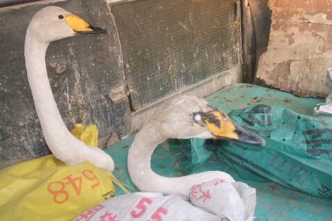

天鹅，被誉为神鸟，姿态优雅，性情温和，忠贞不二，灵性十足，自古以来都是纯真与善良的
两只天鹅每只都在25斤左右，尽管身陷囹吾，又经长途颠簸，但依然身姿优雅，精神和体力都很充足，一点不显困顿。它们的身躯被捆在编织袋中，无法动弹，但长长的脖子仍能伸转自如，摇曳生姿。而看我的眼神，非常安静柔和，没有半点恐惧和绝望，给人感觉就好像两个柔美的小姑娘，一片天真，温顺可爱，似乎知道我是来救她们脱困的！
驱车长途跋涉，来到一大型水库边，打开车门，开始为它们念诵
无始劫中，我们曾经互为父母子女，曾经互为恋人
念完仪轨，为天鹅解开编织袋，亲手为她拭去眼泪，天鹅的唇吻前端有一圈黑边，后端鹅黄色，和一般的家鹅不同，摸上去软软的，她很配合，并未挣扎，再摸摸它的长颈，作为告别，然后抱起她扔进水库。水面已结冰，天鹅伸展翅膀很稳的落在冰面上，回到熟悉的环境，她显得很兴奋，但并不著急逃走，而是慢慢踱著方步超深处走去，一边走一边回头望，似乎在等另一只。
赶紧放了第二只，也是慢慢腾腾朝同一个方向走去。天鹅不急我们却有点急了，一位师兄忍不住朝她们身后扔了一粒土块，可这两位大小姐还是一步三回头，不慌不忙。大约三分钟后，两只天鹅以走出十几米远，逐渐会合，前面一只开始慢跑，然后逐渐加速，冲刺几步后，突然腾空而起！后面一只也紧跟著振翅高飞，越飞越高，直上云霄！
我们先是愣住，接著忍不住兴奋得大跳大叫，两只天鹅似乎也不愿就此离去，在我们头上几百米的空中一边盘旋转圈，一边大声鸣叫，声音高亢明亮，充满喜悦，十分动听，好像在回应我们！那一刻忽然很羡慕她们，真想能和她们一样，翱翔天外，飞越万里……盘旋了大约十分钟，两只天鹅在空中越来越小，逐渐远去……
无比欣喜这一世的因缘际会能救她们于屠刀之下！无限祝福她们永不再遭遇笼网毒害，天高任鸟飞！无比希望她们享尽天年，命终之后，皆能往生
一、我们放生多年，与相关职能部门和形形色色的野生动物贩子都打过交道。您能想到的，人家N年以前就想到了，但为什么这种情况屡禁不止？这里面情况很复杂，水也很深，您的想法不错，都是出自善意，但在现实
二、对物命来说，“救命才是硬道理”！按照您的想法和程序去做时，那些物命早已落入饕饕者口腹多时了。种种质疑、种种理论、种种常识在即将被杀的生命面前都是那么苍白无力，毫无意义！放生就是当下第一念慈悲心，其他第二念、第三念都已是
三、我认识的某开发商，有事请托某领导，三番五次请吃饭都不出来。后来和某大酒店联系弄来只活天鹅，领导听说有天鹅肉吃，才来了兴趣，答应赴宴。一只天鹅做好大概一万元左右，那顿饭花了两万多。请托的事当然也水到渠成。这种事，天天发生，在所多有，所以，列位看官，不是我们哪天来了兴致才放放天鹅，多数时候你有钱也救不到！我们所放的不过是九牛一毛，多数美丽优雅如仙子的天鹅早已被残杀、去毛、红烧、清炖！能落入放生人手中的只是极其幸运的一丁点！
“天地之大德曰生，如来之大道曰慈” 。天地平等生发万物，而人为万物之灵。
人类，应该是世间万物的兄长和守护神，而不是暴君和终结者！永远忘不了那只天鹅眼中的泪水，晶莹圆润，凄美而又温暖，就像珍珠一样！我会尽毕生之力去保护她们，保护一切弱小无助的生命，就像保护自己的母亲和孩子一样！美丽的天鹅，不要再哭泣！